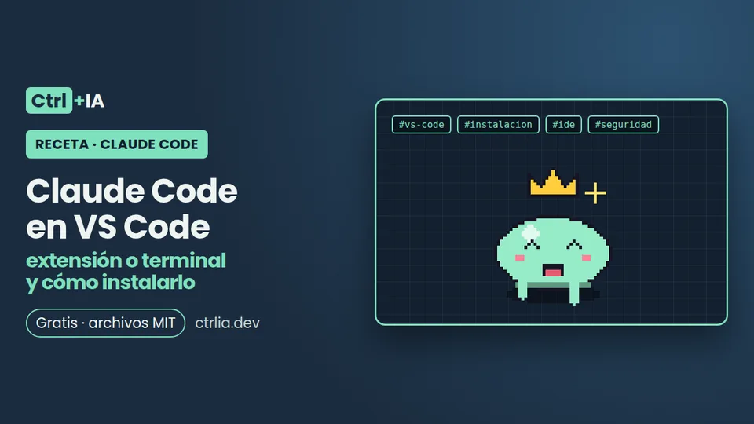

Receta · Básico · 10 min
Claude Code en VS Code: extensión o terminal y cómo instalarlo
Instala la extensión oficial de Claude Code en VS Code (anthropic.claude-code), compárala con la CLI en la terminal y úsala en Cursor sin riesgos.

Probado con Claude Code 2.1.316 · revisado
El problema
Casi todos programamos en VS Code y no está claro cómo meter ahí Claude Code: ¿la extensión, la CLI en la terminal integrada o las dos? ¿Es gratis? ¿Sirve en Cursor o Windsurf? Y hay una duda nueva: el 29 de octubre de 2026 el marketplace de Cursor sirvió una copia manipulada de la extensión. Esta receta te deja la extensión oficial instalada, comprobada y bien configurada.
La solución
1. Revisa los requisitos
Según la documentación oficial:
- VS Code 1.94.0 o posterior. Compruébalo con
code --version. - Una cuenta: cualquier plan de pago de Claude (Pro, Max, Ultra, Team o Enterprise) o una cuenta de Claude Console. No hace falta clave de API: inicias sesión al abrir la extensión por primera vez.
- También funciona con Amazon Bedrock, Google Cloud o Microsoft Foundry: activa el ajuste
claudeCode.disableLoginPrompty sigue la guía de tu proveedor.
2. Instala la extensión oficial
El identificador oficial es anthropic.claude-code y el publicador es Anthropic. Instálala desde la terminal:
code --install-extension anthropic.claude-codeO en VS Code: abre Extensiones (Ctrl+Shift+X; en Mac Cmd+Shift+X), busca «Claude Code» y elige la del publicador Anthropic. Si no aparece después de instalarla, reinicia VS Code o ejecuta Developer: Reload Window en la paleta de comandos.
3. Comprueba que es la del publicador oficial
El nombre de la extensión no basta: la copia manipulada de Cursor usaba el mismo identificador anthropic.claude-code. Comprueba tres cosas:
- En la ficha de la extensión, el publicador es Anthropic con la marca de verificado y el dominio
anthropic.com. En el Marketplace de Visual Studio, el publicadoranthropictiene el dominio verificado; en Open VSX el espacio de nombresAnthropicfigura como verificado. - La versión instalada:
code --list-extensions --show-versions | grep -i claudeAsí salió en el equipo donde se probó esta receta (VS Code 1.136.1 en Linux):
anthropic.claude-code@2.1.312- El publicador que declara la propia extensión y de dónde se instaló:
grep '"publisher"' ~/.vscode/extensions/anthropic.claude-code-*/package.jsonDebe decir "publisher": "Anthropic". Y no instales nunca un .vsix que te pasen por chat, correo o un enlace: usa el marketplace de tu editor.
4. Ábrela y aprende los atajos
Para abrir Claude Code tienes el icono de la chispa (Spark) arriba a la derecha del editor (solo aparece con un archivo abierto), el icono de la barra de actividad, ✻ Claude Code en la barra de estado o la paleta de comandos (Ctrl+Shift+P, escribe «Claude Code»).
| Acción | Windows/Linux | Mac |
|---|---|---|
| Alternar el foco entre el editor y Claude | Ctrl+Esc | Cmd+Esc |
| Abrir en una pestaña nueva | Ctrl+Shift+Esc | Cmd+Shift+Esc |
| Insertar una mención del archivo y la selección actuales | Alt+K | Option+K |
| Reabrir una sesión cerrada | Ctrl+Shift+T | Cmd+Shift+T |
Nueva conversación (activa antes enableNewConversationShortcut) | Ctrl+N | Cmd+N |
| Salto de línea en el mensaje | Shift+Enter | Shift+Enter |
5. Usa las menciones y los diffs
- Contexto automático: Claude ve el archivo abierto y el texto que tengas seleccionado.
- Menciones:
Alt+Kinserta algo como@app.ts#5-10(archivo y rango de líneas). También puedes escribir@authpara buscar por nombre o@src/components/para una carpeta.@terminal:nombreañade la salida de una terminal. - Imágenes y archivos: pega una imagen desde el portapapeles o arrastra archivos al cuadro de mensaje manteniendo
Shift. - Diffs: en modo Manual, cada cambio se abre en un diff lado a lado para aceptarlo o rechazarlo. Desde la versión 2.1.275 hay botones Accept this change y Reject this change debajo de cada cambio (no salen en diffs de más de 100 cambios). Si editas el contenido propuesto en el diff, Claude sabe que lo cambiaste.
- Puntos de control: pasa el ratón sobre un mensaje para bifurcar la conversación, deshacer los cambios de código o ambas cosas.
- Modo: el pie del cuadro de mensaje muestra el modo de permisos (Auto, Manual, Plan, Edit automatically). Para fijar el inicial, usa
claudeCode.initialPermissionModeen tus ajustes de usuario.
6. Decide: extensión, CLI o las dos
La extensión trae su propia CLI para el panel de chat, pero no añade claude a tu PATH. Si quieres usar la CLI en la terminal integrada, instálala aparte:
curl -fsSL https://claude.ai/install.sh | bash
claude --versionLas diferencias según la documentación oficial:
| Función | CLI en la terminal | Extensión de VS Code |
|---|---|---|
| Comandos y skills | Todos | Una parte (escribe / para verlos) |
| Configuración de MCP | Sí | Sí (/mcp en el panel) |
| Puntos de control | Sí | Sí |
Atajo ! para Bash | Sí | No |
| Autocompletado con Tab | Sí | No |
No tienes que elegir para siempre: las dos comparten el historial. Empieza en el panel y sigue en la terminal con claude --resume. Si abres claude en una terminal externa, ejecuta /ide para conectarla a VS Code y ver los diffs en el editor.
Nuestra recomendación: la extensión para el día a día (diffs, menciones con Alt+K) y la CLI cuando necesites todos los comandos, el atajo ! o scripts.
7. Cursor, Windsurf y otros forks
- Cursor: la documentación da el enlace
cursor:extension/anthropic.claude-code. Antes de instalar, comprueba el publicador como en el paso 3 y la versión concursor --list-extensions --show-versions | grep -i claude. - Otros forks de VS Code: busca en su vista de Extensiones o instala desde Open VSX. La documentación no nombra a Windsurf; si su buscador de extensiones no muestra la del publicador Anthropic verificado, no instales otra.
- Editores que no admiten la extensión: instala la CLI y ejecuta
claudeen la terminal integrada.
Anthropic publica la extensión en el Marketplace de Visual Studio y en Open VSX, y avisa de que no respalda ni audita los marketplaces de terceros.
8. Aviso de seguridad: la copia manipulada en Cursor
Esto es lo confirmado por el aviso de seguridad de Cursor y por StepSecurity:
- El 29 de octubre de 2026, entre las 2:27 y las 13:35 (hora del Pacífico), el marketplace de extensiones de Cursor sirvió las versiones 2.1.312 y 2.1.313 de
anthropic.claude-codemanipuladas, para macOS y Windows. Cursor dice que esas versiones «no fueron desarrolladas por Anthropic». - El código añadido intentaba meter una clave SSH del atacante con la etiqueta
svc-telemetry, abrir un túnel SSH inverso, quedarse instalado al reiniciar y enviar datos del equipo. - Anthropic declaró que no hubo intrusión en sus sistemas y que sus canales oficiales no están afectados. StepSecurity verificó como limpia la 2.1.312 de Open VSX; la 2.1.313 no se publicó ni en Open VSX ni en el Marketplace de Visual Studio.
Si usas Cursor y actualizaste ese día, busca la clave (macOS y Linux):
grep -qs svc-telemetry ~/.ssh/authorized_keys && echo "Clave svc-telemetry encontrada" || echo "Sin clave: equipo no afectado"Si aparece, desinstalar la extensión no basta: sigue los pasos de nuestra novedad sobre el incidente y del aviso de Cursor.
Compruébalo
- Abre una carpeta con código, abre un archivo y pulsa
Ctrl+Esc(Cmd+Escen Mac). Se abre el panel de Claude Code. - Selecciona unas líneas, pulsa
Alt+Ky verás algo como@app.ts#5-10en el cuadro de mensaje. - Pide un cambio pequeño («añade un comentario a esta función»). En modo Manual se abre un diff con botones para aceptar o rechazar.
- Si instalaste la CLI, en la terminal integrada (menú Terminal > Nuevo terminal):
claude --version2.1.316 (Claude Code)Por qué funciona
La extensión ejecuta Claude Code dentro de VS Code y además levanta un servidor MCP local llamado ide que escucha solo en 127.0.0.1, con un puerto aleatorio y un token nuevo en cada arranque. La CLI se conecta a él para abrir diffs en el editor, leer tu selección y ver los diagnósticos. Por eso extensión y terminal se complementan y comparten historial. Lo explica la documentación de VS Code.
Errores típicos
- No aparece el icono de la chispa → no hay ningún archivo abierto, VS Code es anterior a 1.94 o la carpeta está en Modo restringido → abre un archivo, actualiza VS Code, confía en la carpeta y ejecuta Developer: Reload Window.
claude: command not founden la terminal integrada → la extensión no añade la CLI al PATH → instala la CLI aparte (paso 6) y abre una terminal nueva.- El panel sale en blanco → versión antigua → actualiza a la 2.1.309 o posterior, recarga la ventana y mira Claude Code: Show Logs.
- Se ignora
ANTHROPIC_API_KEY→ VS Code no hereda las variables de tu terminal → ábrelo concode .desde la terminal o inicia sesión con tu cuenta de Claude. - La extensión se reinstala sola después de desinstalarla → ejecutar
claudeen la terminal de VS Code la vuelve a instalar → desactiva Auto-install IDE extension en/configo ponCLAUDE_CODE_IDE_SKIP_AUTO_INSTALL=1. Cmd+Escno hace nada en macOS Tahoe → lo captura la superposición de juegos del sistema → quítalo en Ajustes del Sistema > Teclado > Atajos de teclado > Mandos de juego, o cambia el atajo «Claude Code: Focus input».
Preguntas frecuentes
¿Claude Code para VS Code es gratis?
La extensión se instala gratis, pero para usarla necesitas un plan de pago de Claude (Pro o superior) o una cuenta de Claude Console, que cobra por uso.
¿Necesito instalar la CLI si ya tengo la extensión?
No para usar el panel de chat: la extensión trae su propia CLI. Sí si quieres ejecutar claude en la terminal, que te da todos los comandos y el atajo !.
¿Funciona en Cursor y Windsurf?
En Cursor sí, con el enlace oficial cursor:extension/anthropic.claude-code. Para otros forks, la documentación indica Open VSX; en cualquier caso comprueba que el publicador sea Anthropic verificado.
¿La versión 2.1.312 que tengo en VS Code es peligrosa?
Según Cursor y Anthropic, la copia manipulada solo se sirvió desde el marketplace de Cursor. En el equipo de prueba, la 2.1.312 de VS Code venía del Marketplace de Visual Studio. Aun así, actualiza a la 2.1.314 o posterior.
¿Puedo pasar una conversación de la extensión a la terminal?
Sí. Comparten historial: ejecuta claude --resume en la terminal y elige la conversación.